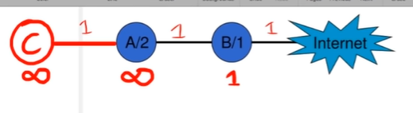
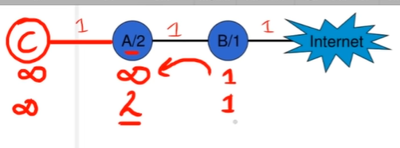
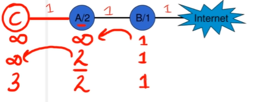
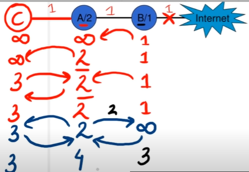
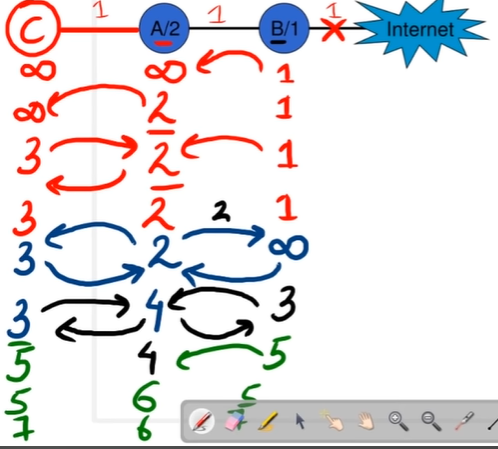
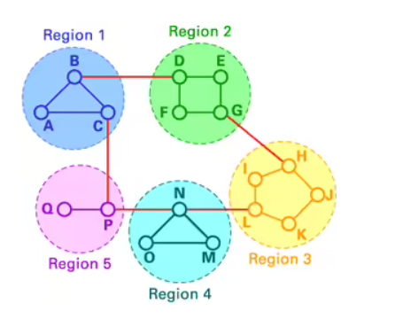
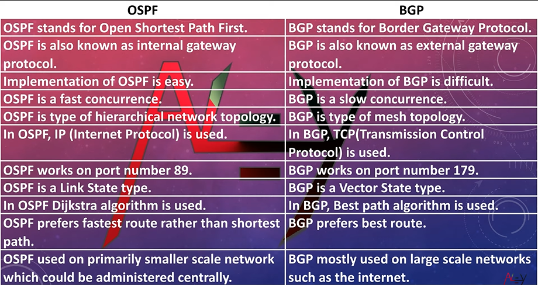
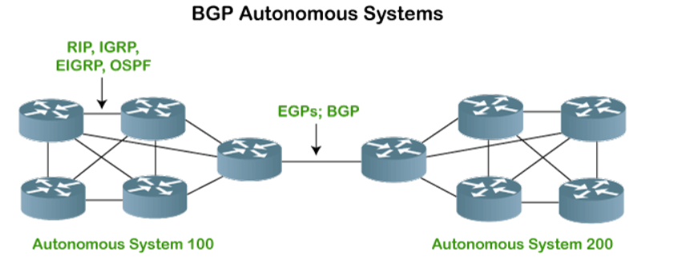
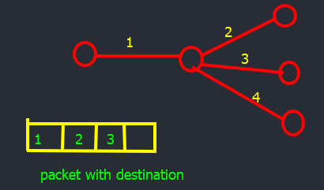

Unit 1#
Routing#
https://computer.howstuffworks.com/routing-algorithm.htm
- Establishing routes that data packets take on their way to a particular destination
- Some data packets travel according to the distance vector model, using distance as a factor.
- others use Link-State Protocol
note: - Packets provide details about origin and destination
- Routers are programmed to understand protocols
- Router knows
- Address format
- How many bytes in package of data sent out over network
- How to make sure all packages reach destination
- Keep messages flowing by best possible route
Routing Algorithm#
https://computer.howstuffworks.com/routing-algorithm.htm
- To find best route(based on parameters)
- No. hops(the trip a packet takes from one router another router in network)
- Time delay
- Communication cost of transmission
- Based on how router gather information of network structure and analysis of info to find best route.
| Global algo | Decentralize algo |
|---|---|
| Every router has complete information about all the routers in the network & traffic status | Each router has info about routers that is directly connected to it Doesn't know about every router in the network |
| These known as LS(link state)algo | Known as DV (distance vector )algo |
LS Algorithm#
Steps every router follows
- step 1:
- Identify physically routers and get ip addresses
- Router starts by sending "HELLO" packet over network
- Each router that receive replies with a message that contain IP address.
- step 2:
- measure time delay, average traffic for neighbor routers.
- routers send echo packets over network
- every router that receive these packets replies with an echo packet
- dividing round trip time by 2 , routers count the delay time
- delay time includes both processing time and transmission time
- step 3:
- flooding
- routers broadcast its their information over the network for other routers to know structure and status of the network
- step 4:
- routers choose best algorithm eg: Dijkstra shortest path algo
- based on the information collected from the routers, the router builds graph networks.
- graph shows location of routers and links to each other
- every link have cost/weights , these are the function of delay time , average traffic, no. of hops.
- router chooses link with lowest weight
Dijkstra algorithm#
DV Algorithms#
- also known as Bellman-Ford routing algorithm and Ford-Fulkerson routing algorithm
-
every router has routing table that shows best route for any destination
Steps every router follows -
initialize with the hello message
- It counts the weight of the links directly connected to it and save the information in the table.
- It send its table to its neighbor routers(not to all) and receive distance vector( not whole routing table) of each of its neighbors.
- Based on the information in its neighbor routing tables, it update its own
Count to infinity problem#
-
occurs in distance vector routing
-

-
all the nodes are connected by 1 distance
- hello message is sent and
- initially B is connected to internet so distance is 1
- A is not connected to internet so infinity
- C also infinity

- now A knows that it can reach to internet through B because B is its neighbor
- but C don't know yet that A can reach

- now C knows it can reach internet through A with distance 3
Now if B to internet connection is broken then with the hello message it will know.

- B is aware , B makes its cost to infinite
- but c and A not known about it
- now A get infinite value from B = infinite
- and A get 3 value from C (as its unaware about the broken connection) , ans A wil tell B that it connect to internet by 2
- A get min distance (3) from C to reach internet , A update its value to 4(3+1)

Hierarchical Routing#
- why?
- LS and DV algo in both routers store information of other routers
- As network increases no of routers increases and size of routing table increases.
- can't handle traffic efficiently.
- routers are classified in groups known as regions.
- each router has information about router in its region.
- router save one record in their table for every other region
- three - level hierarchical routing network is divided into clusters and then regions and each router contains routers

RIP#
- Routing in internet protocol(oldest)
- DV protocol
- uses hop count as a routing measure.
- hop count :No. of routers occurring in between the source and the destination
- path with lowest hop count is considered as best
- eliminates routing loops by resting no of hops permitted between source to destination.
- permits max 15 hops
- make use of split horizon, route poisoning & hold-down to restrict the spread of incorrect info.
Features
- updates of network exchange prodigally
- router trust routing info received from neighbor routers. Routing on rumors
- version : RIP version1 , RIP version2, and RIPng
OSPF#
- open shortest path First family of IP routing protocol
- port no 89
- link state protocol & internal gateway protocol for internet
- developed for IP networks
- used to distribute ip routing info throughout single autonomous system (AS) in an IP network
- AS :large network or group of networks that has a unified routing policy. (like a town's post office)
- based on shortest path first
- every router maintain identical link-state database that describe topology of the area.
- ls database generate from ls advertisements (LSA)
- LSA : packet that contain info about neighbor and path costs.
- each router calculates shortest-path spanning tree,with it self as root.
- topological info flooded throughout the AS.
- this info used to calculate best end-to-end path (variant Dijkstra).
Advantage
- as compared to DV(RIP), OSPF more suitable for serving large heterogenous internetowrks
- useful for trafficking engineering process where routes are constraints to meet quality service
- recalculate routes in short time when topology changes.
- supports for multiple path of equal cost.
- provide multilevel hierarchy area routing to hide topology defined within the area of AS from outside routers.
Disadvantage
-
does not scale well when more routers are added it increases size and frequency of topology updates
-
it does not scale well
BGP#
- Broader Gateway Protocol
- external gateway protocol
- TCP is used
- port no. 179
- path vector routing
- As interact with each other through peering
- BGP is responsible for considering all of the available peering partners and sends traffic to router that is closest to data's destination
- means hoping between autonomous system.


Broad cast and multicast Routing#
Broad cast routing
- sending a packet to all the nodes on the network on the network simultaneously is called broad casting
- eg: weather reports , radio program
methods:
-
Distinct point to point routing:
-
This simply send a distinct packet to each destination
-
it is waste of bandwidth but it also require complete list of all destination
-
Flooding:
-
flooding algo send packet to every outgoing line except the node on which it arrived
- more bandwidth consumed duplicate packets
- Flooding is a way to distribute routing protocols updates quickly to every node in a large network.
Types
- controlled flooding:
- Reverse Path Forwarding and Sequence Number Controlled Flooding are used to controls .
- uncontrolled flooding:
- here is no conditional logic to control how the node distributes information packets to its counterparts
- Without these restraints, repeated distribution of the same packet can occur.
- referred to as broadcast storm or ping storm.
- selective flooding:
-nodes are configured to only send incoming packets to routers in one direction.- This can help to prevent some of the mishaps that occur with uncontrolled flooding
- but is not as sophisticated as controlled flooding.
Advantage
- setup can be easily implemented
- robustness , even in case of large number of route failure packet will find way to destination
- all the nodes are visited no one is left out
- shortest path is always used by flooding.
Limitation
- it create large number of duplicate packets
-
it is waste of bandwidth if single destination need the packet
-
multi destination routing
-
each packet contains either a list of destination
or bit map indicating the desired destination - when a packet received from broad casting, it decide, the number of output lines that are needed, by examining each destination
- based on that router generate a new copy of packets to each output line
-
destination are given directly in the packet
 -
use of spanning tree
-